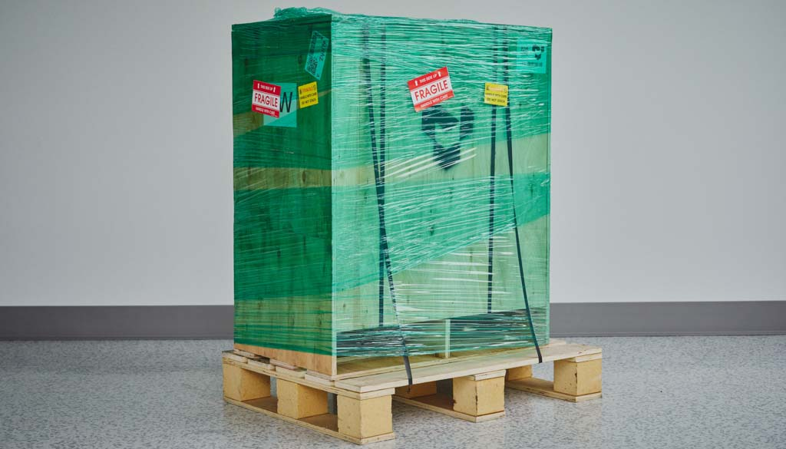
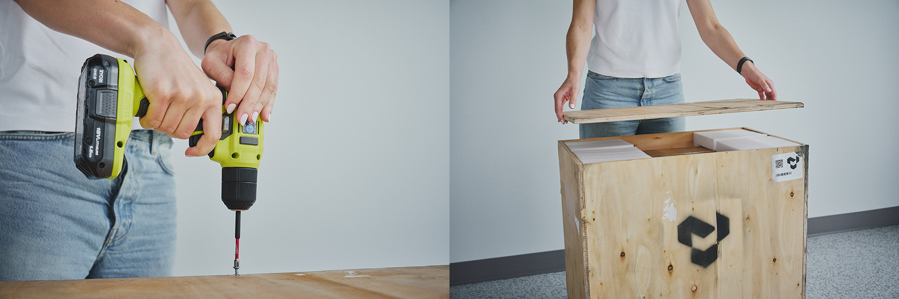
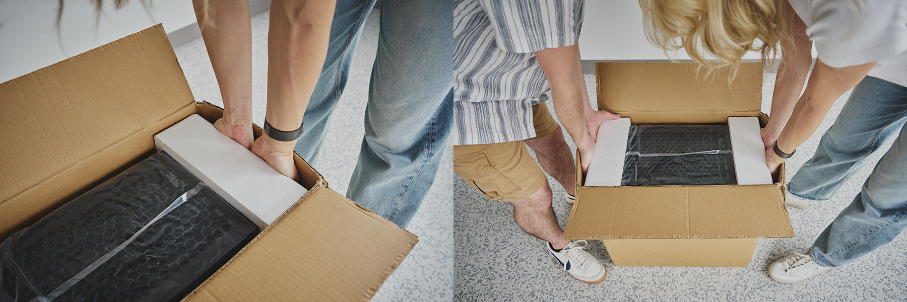
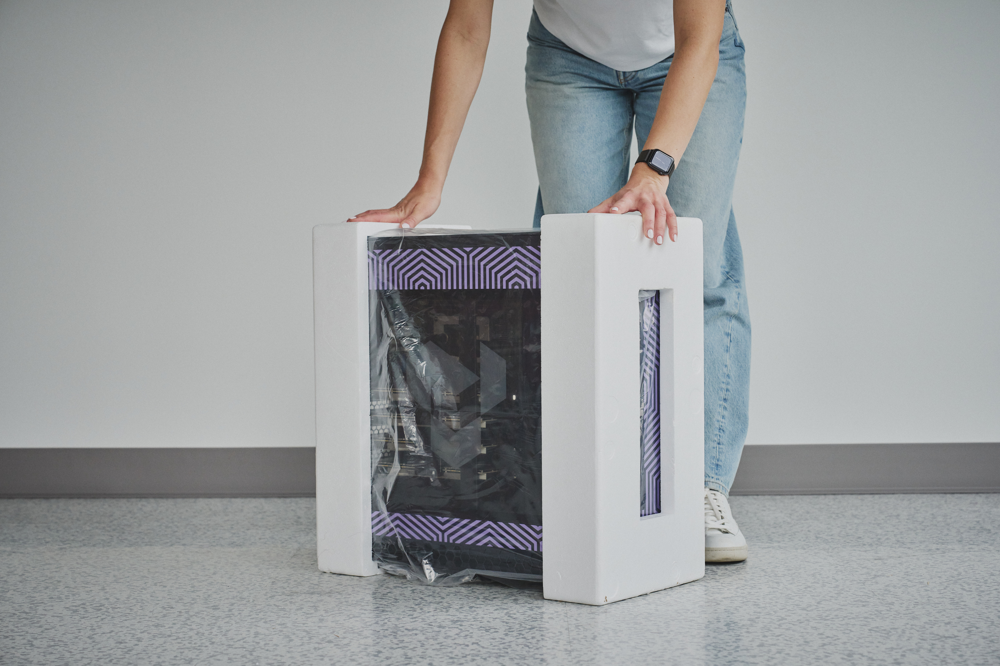
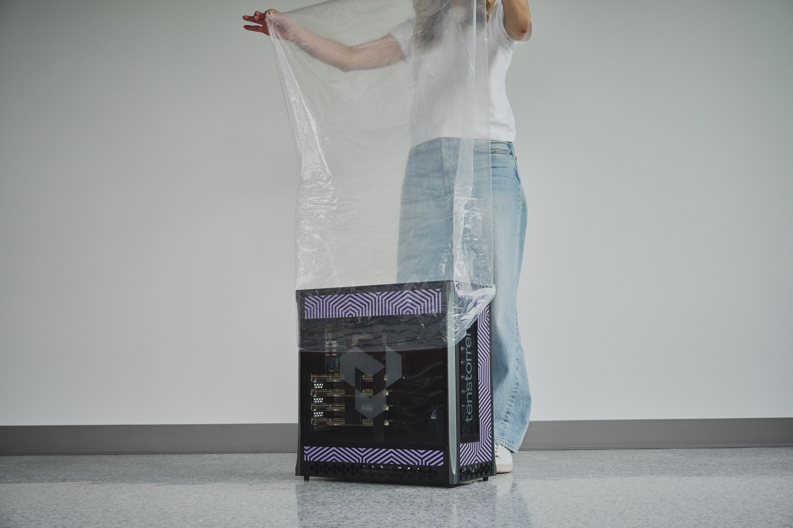
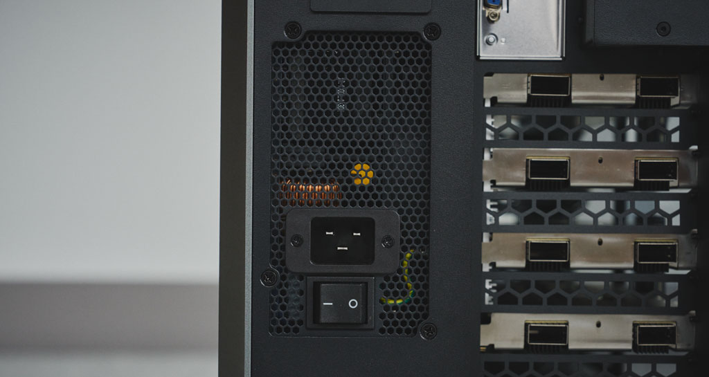
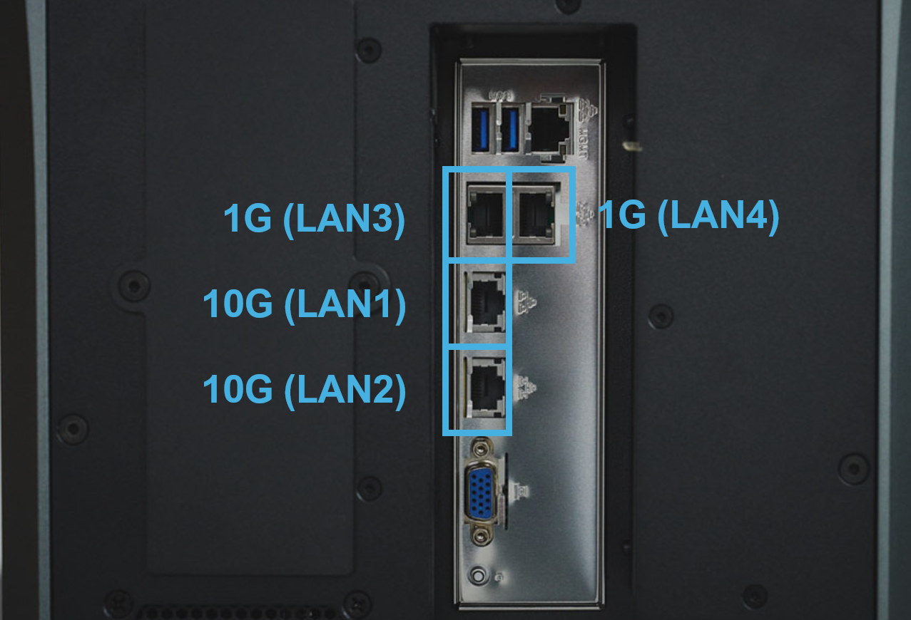

TT-QuietBox (Wormhole)
This page covers everything for the TT-QuietBox Wormhole workstation: how to receive and set it up, and its full hardware specifications. Use the page navigation on the right to jump between sections.
Receiving, Unboxing, and Setup
This guide provides system administrators, hardware engineers, and users responsible for the initial setup of Tenstorrent hardware with step-by-step instructions. You will learn to safely unbox a TT-QuietBox Wormhole™ workstation, connect all required hardware components, and install the recommended operating system.
Before You Begin
Before you begin, choose a clear, stable, and spacious area for the TT-QuietBox Wormhole™ workstation. The system ships in a palletized wooden crate. Ensure you have at least two people and enough room for them to maneuver comfortably and safely around the crate and system. Clear the area where you intend to use the TT-QuietBox Wormhole™ and ensure to use a dedicated circuit and outlet, as specified in the electrical safety warning linked below. Also, confirm that all vents are clear of obstructions or other objects.
Warning
The fully palletized and crated shipment weighs approximately 134 lbs (61 kg), and the workstation itself weighs approximately 80 lbs (36 kg). Unboxing and lifting require at least two people for safe maneuverability.
Do not proceed with unboxing or installation if you suspect shipping damage to the system. Contact Tenstorrent support by raising a support request. Our team will review your request and provide assistance.
Required Tools
For unboxing, you will need the following tools:
Phillips head screwdriver
Scissors or a similar cutting tool
For setup, you will need the following:
Keyboard
Mouse
Monitor
Step 1: Unboxing the Workstation
Follow these steps to unbox your TT-QuietBox Wormhole™ workstation:
Position the crate. Position the crate in your prepared unboxing area, ensuring ample space for two people to work around it.

Remove plastic wrap. Remove the outer plastic wrap and cut the two lifting straps looped around the crate.

Open the crate. Use a Phillips head screwdriver to remove the six screws from the top panel of the crate. Lift off the top panel.

Remove the system from the crate. Remove the protective styrofoam from inside the crate. Use the two lifting straps to vertically lift the inner cardboard box out of the wooden crate. Do not tilt the box sideways during this process.

Open the cardboard box. Cut the two lifting straps off the cardboard box and open the top flaps.
Unpack accessories. Remove the documentation and the accessory bag from the box and set them aside.

Remove the workstation from the cardboard box. Reach into the short sides of the box, secure your hands under the supportive styrofoam, and lift the TT-QuietBox Wormhole™ workstation out of the box. Place it in your workspace.

Remove additional packing material. Remove any remaining packaging from the exterior of the TT-QuietBox Wormhole™ workstation.


Inspect the system. Inspect the workstation to ensure all components are properly mounted and secured. The system ships with sufficient liquid coolant for long-term operation; adding or purchasing coolant is not necessary.
Step 2: Setting Up the Hardware
Follow these steps to set up the hardware for your TT-QuietBox Wormhole™ workstation:
Connect the power cable. Connect the provided C13 power cable to the workstation and then to a dedicated power outlet.

Connect QSFP-DD cables. The included Quad Small Form-factor Pluggable Double Density (QSFP-DD) cables and internal Warp 100 bridges enable high-speed interconnectivity between the Tenstorrent Tensix cores. Your system includes four Wormhole™ n300 Accelerators, internal Warp 100 bridges and two external QSFP-DD cables to create the processor mesh.

The TT-QuietBox ships with the Warp 100 bridges connected, but the two QSFP-DD cables will need to be connected. Connect them according to the system topology diagram below. Ensure each cable is aligned correctly and clicks into place; do not force the connections.

One QSFP-DD cable will need to be connected to Port 1 on the cards in Slots 1 and 4.
One QSFP-DD cable will need to be connected to Port 2 on the cards in Slots 3 and 2.
Connect to the network. For host system network access, connect a standard Ethernet cable (Cat 6 or better, user-provided) to an RJ45 LAN port on the rear panel. The LAN1 and LAN2 ports are 10GbE, while LAN3 and LAN4are 1GbE.
Note
The port that is not outlined in the following image is the BMC management port.

Connect peripherals. Connect your monitor, keyboard, and mouse (user-provided). A VGA-to-HDMI adapter is included for monitors that require an HDMI connection. Be sure to plug in both the VGA and USB-A connectors to the rear panel for a video signal to be transmitted.
Power on the system. Locate the main power supply switch on the rear of the workstation and set it to the ON position. Press the system power button on the front panel.
Note
The system’s initial hardware initialization during its first Power-On-Self-Test (POST) may require up to 10 minutes before displaying the BIOS screen. If after 10 minutes you do not see the BIOS screen, please raise a support request.
Step 3. Install Operating System
The TT-QuietBox system ships without an operating system installed. Tenstorrent recommends preparing a bootable USB flash drive with an installer for Ubuntu 22.04 LTS (Jammy Jellyfish) to ensure proper performance and compatibility with the Tenstorrent software stack.
Note
TT-QuietBox uses an ASRock Rack SIENAD8-2L2T motherboard; the manual for that motherboard is available here.
To install Ubuntu 22.04 LTS (Jammy Jellyfish) from a USB flash drive, first plug in the drive to an available USB Type-A port.
You can either enter the system’s BIOS/UEFI setup to adjust the boot order or enter a boot menu during Power-On-Self-Test (POST):
Option 1: Adjust Boot Order
Power on or restart the system
Press the
F2orDeletekey during Power-On-Self-Test (POST) to enter UEFINavigate to the
BootsectionSet your USB flash drive as the primary boot device
Select
Save Changes and Exit; the system will restart and should now boot from your USB flash driveFollow the on-screen Ubuntu installation prompts
Step 4: Verifying System Recognition of Wormhole n300 Accelerators
Once logged into the system, execute these commands in a terminal to download the latest list of PCI device IDs and list the recognized devices:
sudo update-pciids
lspci -d 1e52:
You should see an output which lists four recognized accelerators:
31:00.0 Processing accelerators: Tenstorrent Inc Wormhole
4b:00.0 Processing accelerators: Tenstorrent Inc Wormhole
b1:00.0 Processing accelerators: Tenstorrent Inc Wormhole
ca:00.0 Processing accelerators: Tenstorrent Inc Wormhole
Important
If you don’t see all four accelerators listed, please raise a support request. Our team will review your request and provide assistance.
Step 5: Installing the Tenstorrent Software Stack
After completing the operating system installation, proceed with Installing the Tenstorrent Software Stack.
Need Additional Support?
If you encounter any issues, or have a question that isn’t covered in the documentation, please raise a support request. Our team will review your request and provide assistance.
Specifications and Requirements
This document provides system administrators and engineers with detailed technical specifications for the TT-QuietBox™ Wormhole™ (TW-04001) workstation. It lists package contents, hardware components, physical dimensions, and operating requirements.
Package Contents
The Tenstorrent TT-QuietBox Wormhole (TW-04001) system package includes the following items:
Tenstorrent TT-QuietBox Wormhole System
C13 Power Cable, 1.8m/6ft.
2x QSFP-DD 400GbE Cable, 0.6m/2ft.
VGA-to-HDMI Adapter
Warning
The TT-QuietBox is shipped in a wooden crate with a total weight of approximately 134 lbs (61 kg). The system itself weighs approximately 80 lbs (36 kg). At least two people are required to move and uncrate the system safely.
For assembly instructions, refer to the Unboxing and Setting Up the TT-QuietBox Workstation Guide. If you encounter issues, refer to the Troubleshooting Common Hardware Issues page.
System Specifications
Specification |
Details |
|---|---|
CPU |
AMD EPYC™ 8124P (16 Cores / 32 Threads, up to 3.0 GHz) |
Motherboard |
ASRock Rack SIENAD8-2L2T* |
Memory |
512 GB (8x64 GB) DDR5-4800 ECC RDIMM (0 Slots Free) |
Storage |
4 TB NVMe PCIe 4.0 x4 |
Tenstorrent Processors |
4x Tenstorrent Wormhole™ n300 Tensix Processor |
Included Cables |
4x Warp 100 Bridge |
Host Connectivity |
2x RJ45 10GBase-T via Intel® X710 |
Tensix Processor Connectivity |
8x QSFP-DD Active 200G (2 per card) |
Power Supply |
1650W 80 PLUS Platinum |
Operating System |
None |
System Dimensions |
10” x 21.5” x 20” (W x D x H) / 254mm x 546mm x 508mm |
System Weight |
79.7 lbs / 36.2 kg |
Shipped Dimensions |
18” x 33” x 27” (W x D x H) / 453mm x 839mm x 686mm |
Shipped Weight |
132.7 lbs / 60.2 kg |
*Early prototypes of this system employed the TYAN Tomcat HX S8040 motherboard (S8040GM4NE-2T).
Environment
The TT-QuietBox system ships without an operating system installed. We recommend installing Ubuntu 22.04 (Jammy Jellyfish) to properly install the Tenstorrent Software Stack.
The TT-QuietBox Liquid-Cooled Desktop Workstation is designed to operate at up to 35°C/95°F external ambient temperatures.
Safety Warnings
Electrical Safety
Danger
Failure to follow these electrical safety instructions may result in electric shock, fire, or damage to the equipment.
Connect the system to a dedicated AC power circuit with sufficient capacity to support the full power draw of the TT-QuietBox Blackhole™ workstation, including peak loads under heavy AI model execution.
Do not share the outlet with other high-power devices. Avoid using household surge strips, extension cords, or multi-outlet power taps; not all are rated for the sustained current of this system.
Use only the provided C13 power cable, and ensure it is plugged into a properly grounded outlet. Do not bypass or disable the grounding pin.
Verify that the circuit wiring and breaker rating meet or exceed the combined system requirements, including liquid-cooling support and all accelerator cards.
If the circuit becomes overloaded or if the breaker trips during power-up or operation, immediately disconnect and remove power. Then, have a qualified electrician inspect and verify the circuit’s capacity before resuming setup.
Never attempt to reset or bypass a tripped breaker without first confirming the circuit integrity; failure to do so may result in overheating, voltage drop, or irreversible damage.
Electrostatic Discharge Safety
Important
Before opening the TT-QuietBox Blackhole™ workstation or handling any internal components, you must discharge static electricity from your body to avoid damaging sensitive hardware. Electrostatic discharge can permanently damage Tensix cores, memory modules, or other components. Handle with care and always follow ESD-safe practices.
Touch a grounded metal surface, such as a grounded rack, chassis, or power supply casing, before and during internal handling.
Ideally, wear an ESD wrist strap connected to a verified ground point.
Avoid working on carpeted floors or in low-humidity environments where static buildup is more likely.
Do not touch any processor, memory module, connector, or printed circuit board (PCB) circuitry unless absolutely necessary, and only after properly discharging.